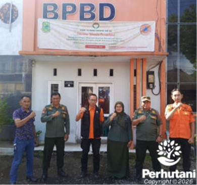

KUNINGAN, PERHUTANI (11/01/2026) | Dalam rangka memperkuat upaya mitigasi risiko bencana di tahun 2026, Perum Perhutani KPH Kuningan terus membangun sinergi dengan berbagai pemangku kepentingan. Salah satunya melalui kegiatan silaturahmi dan koordinasi dengan Badan Penanggulangan Bencana Daerah (BPBD) Kabupaten Kuningan.
Pada Kamis 8 Januari 2026, Administratur/Kepala Kesatuan Pemangkuan Hutan (KKPH) Kuningan, Siti Kasanah, S.Hut, didampingi Wakil Administratur beserta jajaran, menyambangi Kantor BPBD Kabupaten Kuningan. Kunjungan tersebut bertujuan untuk mempererat hubungan kelembagaan sekaligus melakukan koordinasi terkait mitigasi risiko bencana di wilayah kerja KPH Kuningan.
Hubungan baik antara Perhutani KPH Kuningan dan BPBD Kabupaten Kuningan telah terjalin sejak lama, baik secara personal maupun institusional. Sinergi tersebut juga telah diperkuat secara formal melalui penandatanganan Nota Kesepahaman (MoU) sebagai dasar kerja sama dalam penanggulangan dan mitigasi bencana.
Kedatangan jajaran KPH Kuningan disambut hangat oleh Kepala Pelaksana BPBD Kabupaten Kuningan, Indra Bayu Permana, S.STP. Dalam kesempatan tersebut, ia menyampaikan pentingnya menjaga dan memperkuat kolaborasi yang telah terbangun.
“Hubungan baik antara Perhutani dengan BPBD harus terus dipertahankan, terlebih kita secara resmi telah terikat melalui MoU,” ujarnya.
Selama ini, Perhutani KPH Kuningan dalam setiap pelaksanaan kegiatan pengelolaan hutan senantiasa mengedepankan upaya mitigasi terhadap berbagai potensi bencana, seperti kebakaran hutan, banjir, dan tanah longsor. Upaya tersebut turut didukung oleh peran aktif BPBD sehingga tercipta kondisi lingkungan yang aman, kondusif, dan terkendali.
Administratur KPH Kuningan, Siti Kasanah, menyampaikan bahwa berdasarkan data pengamatan dalam dua tahun terakhir, tidak tercatat adanya kejadian bencana di wilayah kerja KPH Kuningan.
“Syukur alhamdulillah, dalam dua tahun terakhir tidak terjadi bencana baik kebakaran hutan, banjir, maupun longsor di wilayah KPH Kuningan. Hal ini harus kita pertahankan dan terus kita tingkatkan. Dengan sinergi yang berkelanjutan bersama BPBD, kami berharap kondisi ini dapat terus terwujud,” ungkapnya.
Memasuki musim penghujan, potensi terjadinya bencana seperti banjir dan longsor menjadi perhatian bersama. Hal tersebut sejalan dengan pernyataan Kepala Pelaksana BPBD Kabupaten Kuningan, Indra Bayu Permana, yang menegaskan pentingnya kesiapsiagaan pada awal tahun 2026.
“Tahun 2026, khususnya pada bulan Januari hingga April, kita harus benar-benar siap siaga dan waspada terhadap risiko bencana, mengingat pada periode tersebut curah hujan cukup tinggi,” jelasnya.
Melalui kegiatan silaturahmi dan koordinasi ini, Perhutani KPH Kuningan dan BPBD Kabupaten Kuningan menegaskan komitmen bersama dalam menjaga keselamatan lingkungan dan masyarakat melalui upaya mitigasi risiko bencana yang berkelanjutan di Kabupaten Kuningan.
Editor: WK
Copyright © 2026 Warta Nusantara Barat